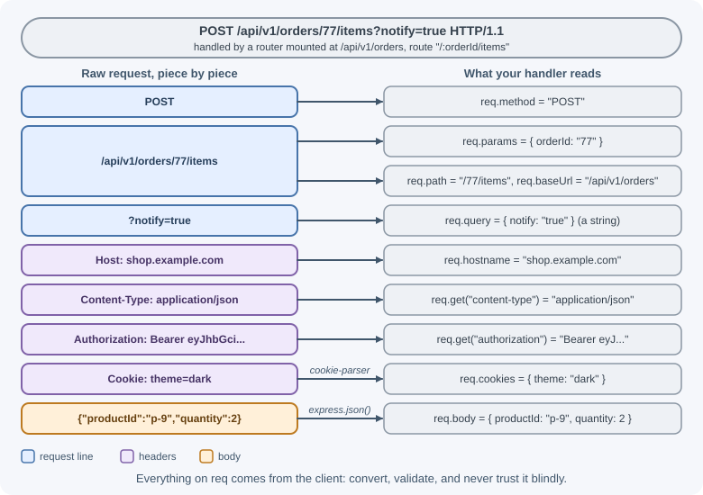
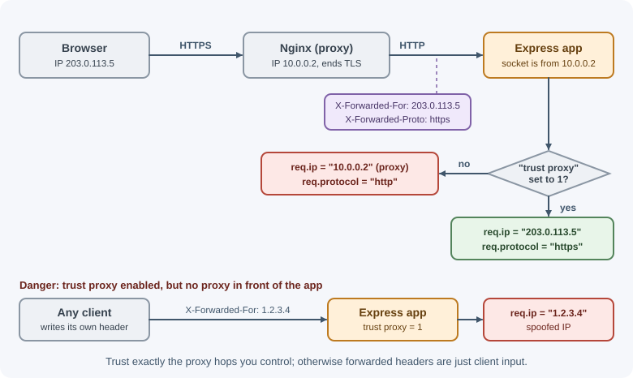

The Request Object¶
Every Express handler receives req, an object describing the incoming
HTTP request. It extends Node.js's http.IncomingMessage with convenient
properties such as req.params, req.query, and req.body. Knowing where
each piece of client data lives, and what type it has, is the first step
to handling it safely.
Why it matters¶
All client input arrives through req: path segments, query strings,
headers, cookies, and the body. Reading the wrong property, assuming a
value is a number when it is a string, or trusting a header that a proxy
or attacker could set are frequent causes of bugs and security holes.
Understanding req also explains how features such as proxies, mounted
routers, and content negotiation affect what your code sees.
Real-world usage¶
Almost every production Express app sits behind infrastructure that
rewrites what req sees. The platforms document the headers they add,
which is exactly what the trust proxy setting reads:
- AWS Application Load Balancer stores the client's IP address in
X-Forwarded-Forand, by default, appends it to any value the client already sent. AWS warns that the header's entries "can only be considered trustworthy if added by systems that are properly secured within the network" (AWS documentation). - Heroku's router sets
X-Forwarded-For, appending the client IP to the right of any existing list, plusX-Forwarded-Proto(for examplehttps) and anX-Request-Idfor each request (Heroku Dev Center). - Cloudflare sends
CF-Connecting-IP, the IP address of the client that connected to Cloudflare, on traffic from its edge to your origin server (Cloudflare documentation).
Because each layer appends to X-Forwarded-For, the number of trusted
hops must match your real setup: one for a single load balancer, two for a
CDN in front of a load balancer.
How it works¶
Anatomy of a request¶

req.originalUrl keeps the whole URL, /api/v1/orders/77/items?notify=true,
no matter which router handles the request.
req.params¶
Values captured by route parameters such as /users/:id. They are always
strings and are already URL-decoded (/users/a%20b gives "a b").
app.get("/users/:id", (req, res) => {
const id = Number(req.params.id);
if (!Number.isInteger(id)) {
return res.status(400).json({ error: "id must be an integer" });
}
res.json({ id });
});
req.query¶
The parsed query string. Express 5 uses the simple parser by default
(Node.js's querystring module). Express 4 used the extended parser
(the qs package), which builds nested objects.
| Query string | Simple parser (Express 5 default) | Extended parser |
|---|---|---|
?page=2 |
{ page: "2" } |
{ page: "2" } |
?tag=a&tag=b |
{ tag: ["a", "b"] } |
{ tag: ["a", "b"] } |
?user[name]=Asha |
{ "user[name]": "Asha" } |
{ user: { name: "Asha" } } |
?active |
{ active: "" } |
{ active: "" } |
Switch parsers with app.set("query parser", "extended"). Nested query
objects are convenient but make validation harder, so many APIs stay with
the simple parser.
Two rules follow from this table:
- Every value is a string or an array of strings.
?page=2gives"2", and?active=falsegives the truthy string"false". Convert and validate explicitly. - A key can unexpectedly be an array.
?page=1&page=2gives["1", "2"]. Code that callsreq.query.page.trim()would crash.
In Express 5, req.query is a getter: you cannot replace it with a
validated copy. Assigning to it throws a TypeError in ES modules, and
changing one of its properties does not stick, because each read parses
the query string again. Store parsed values in another property instead
(see request validation).
req.body¶
The parsed request body. It exists only after a body-parsing middleware
such as express.json() has run for a matching Content-Type. In
Express 5, req.body is undefined when no parser handled the request,
so guard against it.
app.use(express.json());
app.post("/notes", (req, res) => {
const text = req.body?.text;
if (typeof text !== "string" || text.length === 0) {
return res.status(400).json({ error: "text is required" });
}
res.status(201).json({ text });
});
See body parsing and content types for JSON, form, raw, and multipart bodies.
Headers: req.headers and req.get()¶
req.headers is a plain object with lowercase header names. req.get()
(alias req.header()) looks up a header case-insensitively.
req.headers["content-type"]; // "application/json"
req.get("Content-Type"); // "application/json"
req.get("Referrer"); // checks both Referrer and Referer
Headers are client-controlled. Never trust a header such as
X-User-Role to make authorization decisions.
Cookies: req.cookies and req.signedCookies¶
Express does not parse cookies itself. The cookie-parser middleware
fills req.cookies and, when given a secret, verifies signed cookies into
req.signedCookies.
import cookieParser from "cookie-parser";
app.use(cookieParser(process.env.COOKIE_SECRET));
app.get("/preferences", (req, res) => {
res.json({
theme: req.cookies.theme ?? "light", // ordinary cookie
cartId: req.signedCookies.cartId ?? null, // false if tampered with
});
});
See cookies and sessions.
URL properties¶
| Property | Example value (router mounted at /api/users, request GET /api/users/42?x=1) |
Meaning |
|---|---|---|
req.originalUrl |
/api/users/42?x=1 |
The full URL as received; never rewritten |
req.baseUrl |
/api/users |
The mount path of the current router |
req.url |
/42?x=1 |
URL relative to the mount path (Express rewrites it) |
req.path |
/42 |
Path part of req.url, without the query string |
req.method |
GET |
HTTP method in uppercase |
Use req.originalUrl for logging, because req.url changes inside
mounted routers.
Client and connection details¶
| Property | Meaning |
|---|---|
req.ip |
Client IP address (respects the trust proxy setting) |
req.ips |
Chain of IPs from X-Forwarded-For when trust proxy is enabled |
req.hostname |
Host name from the Host header (or X-Forwarded-Host when trusted) |
req.protocol |
"http" or "https" (or X-Forwarded-Proto when trusted) |
req.secure |
true when req.protocol === "https" |
Behind a proxy: the trust proxy setting¶
In production, Express usually runs behind a load balancer or a reverse
proxy such as Nginx. The proxy terminates HTTPS and forwards the request
over plain HTTP, adding headers such as X-Forwarded-For and
X-Forwarded-Proto.

// Trust exactly one proxy hop in front of the app
app.set("trust proxy", 1);
Only enable it when a proxy you control really sits in front of the app.
If the app is directly exposed, a client could send a fake
X-Forwarded-For header and spoof its IP, which breaks rate limiting and
audit logs. See reverse proxy.
Content checks: req.is() and req.accepts()¶
req.is(type)checks the request'sContent-Type. It returns the matching type,falseif it does not match, ornullif the request has no body. "No body" means noContent-LengthorTransfer-Encodingheader, so a POST sent withContent-Length: 0returnsfalse, notnull.req.accepts(types)checks theAcceptheader and returns the best match the client accepts, orfalse.
app.post("/import", (req, res) => {
if (!req.is("application/json")) {
return res.status(415).json({ error: "Send application/json" });
}
res.json({ imported: true });
});
app.get("/report", (req, res) => {
const type = req.accepts(["json", "csv"]);
if (type === "csv") return res.type("csv").send("id,total\n1,20\n");
if (type === "json") return res.json([{ id: 1, total: 20 }]);
res.status(406).send("Not Acceptable");
});
req.route¶
The route that matched, including its path pattern. Useful for logging
metrics per route (/users/:id) rather than per URL (/users/42), which
would create a separate metric for every id.
app.get("/users/:id", (req, res) => {
console.log(req.route.path); // "/users/:id"
res.end();
});
Attaching your own data¶
Middleware commonly attaches data for later handlers, such as the authenticated user:
function authenticate(req, res, next) {
req.user = { id: "u1", role: "admin" }; // normally from a verified token
next();
}
res.locals is an alternative place for per-request data. In TypeScript,
add custom properties through declaration merging so they are typed:
// types/express.d.ts
declare global {
namespace Express {
interface Request {
user?: { id: string; role: "admin" | "member" };
}
}
}
export {};
When to use and when not to use¶
Each part of req suits a different kind of data:
| Data | Read it from | Do not use it for |
|---|---|---|
Which resource (/orders/77) |
req.params |
Optional filters |
| Filters, sorting, pagination | req.query |
Secrets or tokens (URLs end up in logs and browser history) |
| Data being created or changed | req.body |
GET requests (a GET body has no defined meaning in HTTP, and some servers and proxies reject it) |
| Credentials, content type, versions, idempotency keys | Headers via req.get() |
Authorization decisions based on headers the client can set freely, such as X-User-Role |
| Browser session identifiers | req.cookies / req.signedCookies |
Non-browser API clients, which usually send Authorization instead |
| Client IP for logs and rate limits | req.ip with trust proxy set correctly |
Anything security-critical when trust proxy is wrong |
Choosing the trust proxy value:
| Deployment | Setting | Why |
|---|---|---|
| App reachable directly from the internet | false (default) |
No proxy headers can be trusted |
| One load balancer or reverse proxy (Nginx, AWS ALB, Heroku router) | 1 |
Trust exactly one hop |
| CDN in front of a load balancer | 2, or the proxies' address ranges |
Two layers each append to X-Forwarded-For |
| Proxy on the same machine | "loopback" |
Trust only 127.0.0.1/8 and ::1 |
| Known proxy addresses | A list such as ["10.0.0.2", "10.0.0.3"] |
Most precise; nothing else is trusted |
Avoid true unless every request is guaranteed to pass through your own
proxies: it trusts the left-most X-Forwarded-For entry, which the client
controls.
Practical examples¶
A search endpoint that handles query strings safely¶
app.get("/products", (req, res) => {
// Normalize: take the first value if an array was sent
const first = (value) => (Array.isArray(value) ? value[0] : value);
const page = Number.parseInt(first(req.query.page) ?? "1", 10);
const limit = Math.min(Number.parseInt(first(req.query.limit) ?? "20", 10), 100);
const inStock = first(req.query.inStock) === "true"; // "false" -> false
if (!Number.isInteger(page) || page < 1 || !Number.isInteger(limit) || limit < 1) {
return res.status(400).json({ error: "page and limit must be positive integers" });
}
res.json({ page, limit, inStock });
});
curl "http://localhost:3000/products?page=2&limit=500&inStock=false"
# {"page":2,"limit":100,"inStock":false}
Logging request details¶
app.use((req, res, next) => {
console.log(JSON.stringify({
method: req.method,
url: req.originalUrl,
ip: req.ip,
userAgent: req.get("User-Agent"),
}));
next();
});
Best practices¶
- Treat every part of
reqas untrusted input and validate it. - Convert query and parameter strings to the types you need, and reject invalid values with a 400-range status.
- Handle the case where a query key is an array.
- Use
req.get()for headers so case does not matter. - Set
trust proxyto match your real infrastructure, never blindly totrueon an exposed server. - Log
req.originalUrlandreq.route.path, notreq.url. - Avoid logging bodies, cookies, or
Authorizationheaders, which may contain secrets or personal data.
In production¶
- Every user hits the rate limit at once. Symptom: many unrelated
users get
429 Too Many Requests. Detect: access logs show the same private address (the load balancer's) asreq.ipfor every request;express-rate-limitalso reports the validation errorERR_ERL_UNEXPECTED_X_FORWARDED_FORwhen it sees that header whiletrust proxyis off. Cause:trust proxyis not set behind a proxy, so all clients share one IP. Fix: settrust proxyto the real number of proxy hops. - An abusive client is never rate-limited. Symptom: one client
makes thousands of requests without being blocked. Detect: the proxy's
logs show one connecting address while your app logs a different
"client IP" on every request. Cause:
trust proxyistrueor trusts too many hops, so the client's ownX-Forwarded-Forvalue is believed. Fix: trust the exact hop count or the proxies' addresses. - HTTPS redirect loops and missing secure cookies. Symptom: browsers
show
ERR_TOO_MANY_REDIRECTS, or session cookies markedsecureare never set. Detect: logs showreq.protocolashttpfor traffic that arrived over HTTPS. Cause: TLS ends at the proxy andtrust proxyis off, so Express ignoresX-Forwarded-Proto. Fix: settrust proxy. - 500 errors from repeated query keys. Symptom: a search endpoint
fails for a few clients. Detect:
TypeError: req.query.q.trim is not a functionin the error logs. Cause:?q=a&q=bmakes the value an array. Fix: normalize or validate query values before using them. - Secrets appear in logs. Symptom: API keys or tokens turn up in log
search or a log export. Detect: secret scanning on the log store.
Cause: logging whole
req.headersobjects, or accepting API keys in the query string, which proxies also log. Fix: redactAuthorizationandCookie, and accept credentials only in headers.
Important terminology¶
- Route parameter: A value captured from the path, in
req.params. - Query string: The
?key=valuepart of a URL, parsed intoreq.query. - Request body: Data sent after the headers, parsed into
req.body. - Request header: Metadata sent with the request, such as
Content-TypeorAuthorization. - Mount path: The prefix where a router is attached; shown in
req.baseUrl. - Trust proxy: The setting that tells Express to believe
X-Forwarded-*headers from proxies. - Content negotiation: Choosing a response format based on the
client's
Acceptheader.
Common mistakes and misconceptions¶
- Comparing
req.query.active === true; query values are strings. - Assuming
req.bodyalways exists; it isundefinedwithout a matching parser in Express 5. - Reading
req.ipbehind a proxy withouttrust proxyand getting the proxy's address for every user. - Enabling
trust proxyon a server reachable directly from the internet, letting clients spoof their IP. - Using
req.urlfor logging inside a router and losing the mount prefix. - Trusting client headers for authorization decisions.
- Trying to assign
req.query = validatedin Express 5;req.queryis a getter.
Revision questions¶
- What is the difference between
req.params,req.query, andreq.body? - Why is
?active=falsea common source of bugs? - How do
req.originalUrl,req.baseUrl,req.url, andreq.pathdiffer inside a mounted router? - What does the
trust proxysetting change, and what is the risk of misconfiguring it? - What do
req.is()andreq.accepts()check? - How do you add a typed
req.userproperty in TypeScript?